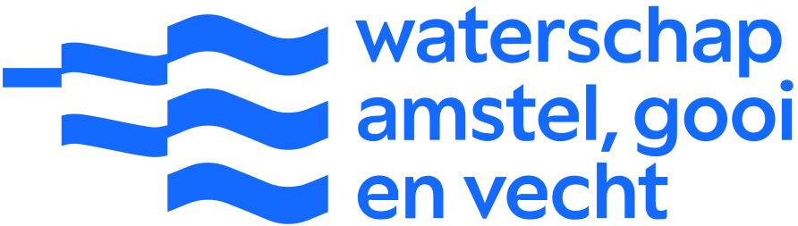

Luchtfoto © PDOK / Beeldmateriaal Nederland

Which pipe to dig, which to line, and what it costs the climate.
capncookdev.github.io/AGV-Hackathon
Hack the Water Graph · Use Case 4 · hackathon prototype